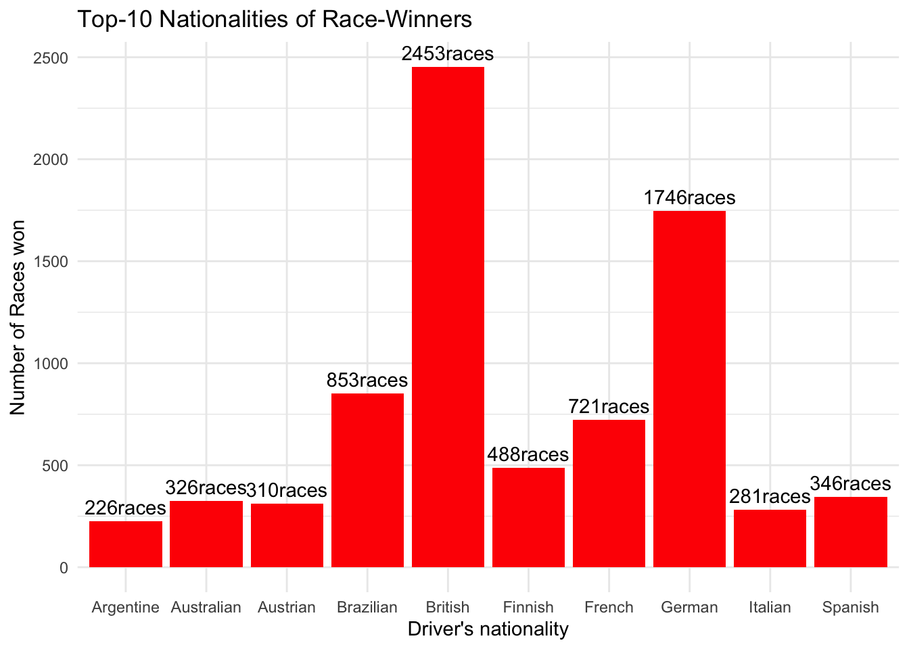

library(maps)
library(ggmap)## Loading required package: ggplot2## Google's Terms of Service: https://cloud.google.com/maps-platform/terms/.## Please cite ggmap if you use it! See citation("ggmap") for details.library(gplots) #new##
## Attaching package: 'gplots'## The following object is masked from 'package:stats':
##
## lowesslibrary(RColorBrewer)
library(tidyverse)## ── Attaching packages ─────────────────────────────────────── tidyverse 1.3.1 ──## ✓ tibble 3.1.5 ✓ dplyr 1.0.7
## ✓ tidyr 1.1.3 ✓ stringr 1.4.0
## ✓ readr 2.0.1 ✓ forcats 0.5.1
## ✓ purrr 0.3.4## ── Conflicts ────────────────────────────────────────── tidyverse_conflicts() ──
## x dplyr::filter() masks stats::filter()
## x dplyr::lag() masks stats::lag()
## x purrr::map() masks maps::map()library(tidytuesdayR)
library(dplyr)
library(jsonlite)##
## Attaching package: 'jsonlite'## The following object is masked from 'package:purrr':
##
## flattenlibrary(leaflet)
library(httr)
library(ggthemes)
library(sf)## Linking to GEOS 3.8.1, GDAL 3.2.1, PROJ 7.2.1driver_standings <- readr::read_csv('https://raw.githubusercontent.com/rfordatascience/tidytuesday/master/data/2021/2021-09-07/driver_standings.csv')## Rows: 33206 Columns: 7## ── Column specification ────────────────────────────────────────────────────────
## Delimiter: ","
## chr (1): positionText
## dbl (6): driverStandingsId, raceId, driverId, points, position, wins##
## ℹ Use `spec()` to retrieve the full column specification for this data.
## ℹ Specify the column types or set `show_col_types = FALSE` to quiet this message.races <- readr::read_csv('https://raw.githubusercontent.com/rfordatascience/tidytuesday/master/data/2021/2021-09-07/races.csv')## Rows: 1058 Columns: 8## ── Column specification ────────────────────────────────────────────────────────
## Delimiter: ","
## chr (3): name, time, url
## dbl (4): raceId, year, round, circuitId
## date (1): date##
## ℹ Use `spec()` to retrieve the full column specification for this data.
## ℹ Specify the column types or set `show_col_types = FALSE` to quiet this message.drivers <- readr::read_csv('https://raw.githubusercontent.com/rfordatascience/tidytuesday/master/data/2021/2021-09-07/drivers.csv')## Rows: 853 Columns: 9## ── Column specification ────────────────────────────────────────────────────────
## Delimiter: ","
## chr (7): driverRef, number, code, forename, surname, nationality, url
## dbl (1): driverId
## date (1): dob##
## ℹ Use `spec()` to retrieve the full column specification for this data.
## ℹ Specify the column types or set `show_col_types = FALSE` to quiet this message.#download.file(
# "http://ergast.com/downloads/f1db_ansi.sql.gz",
#destfile = "f1db-mysql.zip"
#)#Creat a more comprehensive data set
driver_results_df <- driver_standings %>%
left_join(races, by = "raceId") %>%
rename(driver_url = url) %>%
left_join(drivers, by = "driverId")
glimpse(driver_results_df)## Rows: 33,206
## Columns: 22
## $ driverStandingsId <dbl> 1, 2, 3, 4, 5, 6, 7, 8, 9, 10, 11, 12, 13, 14, 15, 1…
## $ raceId <dbl> 18, 18, 18, 18, 18, 18, 18, 18, 19, 19, 19, 19, 19, …
## $ driverId <dbl> 1, 2, 3, 4, 5, 6, 7, 8, 1, 2, 3, 4, 5, 6, 7, 8, 9, 1…
## $ points <dbl> 10, 8, 6, 5, 4, 3, 2, 1, 14, 11, 6, 6, 10, 3, 2, 11,…
## $ position <dbl> 1, 2, 3, 4, 5, 6, 7, 8, 1, 3, 6, 7, 4, 9, 10, 2, 5, …
## $ positionText <chr> "1", "2", "3", "4", "5", "6", "7", "8", "1", "3", "6…
## $ wins <dbl> 1, 0, 0, 0, 0, 0, 0, 0, 1, 0, 0, 0, 0, 0, 0, 1, 0, 0…
## $ year <dbl> 2008, 2008, 2008, 2008, 2008, 2008, 2008, 2008, 2008…
## $ round <dbl> 1, 1, 1, 1, 1, 1, 1, 1, 2, 2, 2, 2, 2, 2, 2, 2, 2, 2…
## $ circuitId <dbl> 1, 1, 1, 1, 1, 1, 1, 1, 2, 2, 2, 2, 2, 2, 2, 2, 2, 2…
## $ name <chr> "Australian Grand Prix", "Australian Grand Prix", "A…
## $ date <date> 2008-03-16, 2008-03-16, 2008-03-16, 2008-03-16, 200…
## $ time <chr> "04:30:00", "04:30:00", "04:30:00", "04:30:00", "04:…
## $ driver_url <chr> "http://en.wikipedia.org/wiki/2008_Australian_Grand_…
## $ driverRef <chr> "hamilton", "heidfeld", "rosberg", "alonso", "kovala…
## $ number <chr> "44", "\\N", "6", "14", "\\N", "\\N", "\\N", "7", "4…
## $ code <chr> "HAM", "HEI", "ROS", "ALO", "KOV", "NAK", "BOU", "RA…
## $ forename <chr> "Lewis", "Nick", "Nico", "Fernando", "Heikki", "Kazu…
## $ surname <chr> "Hamilton", "Heidfeld", "Rosberg", "Alonso", "Kovala…
## $ dob <date> 1985-01-07, 1977-05-10, 1985-06-27, 1981-07-29, 198…
## $ nationality <chr> "British", "German", "German", "Spanish", "Finnish",…
## $ url <chr> "http://en.wikipedia.org/wiki/Lewis_Hamilton", "http…#Filter the data to only encompass the top 10 nationalities with more races won from 1950 to 2021.
driver_wins <- driver_results_df %>%
group_by(nationality) %>%
summarise(total_wins = sum(wins)) %>%
arrange(desc(total_wins)) %>%
head(10)# generate labels for plot
lbl <- paste0(driver_wins$total_wins, "races")
driver_wins <- driver_wins %>% mutate(label = lbl)#Plot nationality by number of races won, add labels and color.
driver_wins %>%
ggplot(aes(x=nationality,
y=total_wins))+
geom_col(fill="red")+
theme_minimal() +
labs(y="Number of Races won", x="Driver's nationality", title="Top-10 Nationalities of Race-Winners")+
geom_text(aes(y = total_wins, label = label), vjust = -0.5) This bar plot shows the top 10 nationalities of winners of Formula 1 races and the number of races won by each of them. I decided to plot it because in some countries races are really popular sports and a source of quality entertainment with many followers. Knowing the amount of races won by drivers of ones country appeals to national sentiment and pride. In the future, a good investigation would be to find the amount of supporters in each country to see if there is a correlation between number of national supporters and the number of wins achieved by drivers of that nationality.
Link to Data: https://github.com/rfordatascience/tidytuesday/blob/master/data/2021/2021-09-07/readme.md